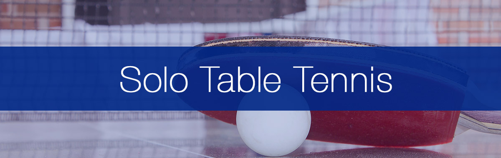
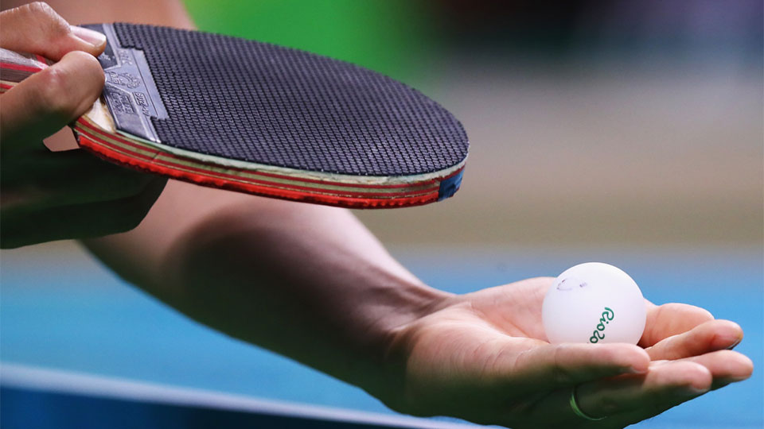

Build a killer
serve in 15 minutes a day
Two parallel tracks for a club-level amateur. Solo work that's deliberate and target-bound; partner work that walks from a fixed feeder return all the way to a free rally — and refuses to let you skip a stage.
Two parallel tracks. Solo: 15 min/day, one ball at a time, every serve preceded by a visualisation and aimed at a paper target — escape the "machine-gun" trap[6][7]. Partner: for each killer serve, run a third-ball drill that walks through three stages — fixed feeder return → variable spin/pace → fully random placement[3][8]. Test it in practice matches and aim for a 40% third-ball-attack conversion before adding a new serve[12].
The two ways amateurs waste serve practice
Almost every amateur falls into one of these. Everything below is structured to keep you out of both.
Rapid-fire box-emptying
"The speed and thoughtfulness of firing a machine gun"[6] — high volume, zero attention, no improvement. You feel productive because the box empties. The serve doesn't get any better.
Drill-only training
Pretty technique on a known feed that collapses the moment the opponent does anything unexpected[8]. Lovely strokes, no match game. The drill never escalates, the random rep never comes.
Solo: deliberate, target-bound, daily
Ben Larcombe coined this "Service Detention" — 15 minutes of focused serve practice, alternating between three working serves[7]. Volume is the point: small, daily, sustainable. A 30-inch surface — most dining tables — is close enough to keep the touch honest[9].

The session, in numbers
One 15-minute block ≈ 60–80 serves[9]. The canonical placement drill is 20 serves to each of 3 zones — wide forehand, wide backhand, elbow/crossover — with a towel or ball box as the target[12]. That's 60 serves in 10–11 minutes. The remaining 4–5 go to one of the five drills below — rotate through them, don't sit on one.
Larry Hodges' rule sits on top: visualise the bounce points → execute → evaluate against the visualisation, one ball at a time[6]. The whole protocol exists to defend against Failure Mode 01.
10 in a row
One serve, one paper target. Hit it 10× consecutively. Fold paper smaller as you improve.
Knock the cup
Plastic cups at the far end. Knock them over with long serves. Use broken balls when cups get easy.
Half-long visualiser
Towel on the table with a small gap to the end line. First bounce in front of the towel; second bounce just past it.
Same serve, multiple targets
2–3 paper targets. Same serve, hit each in sequence. Track consecutive runs.
Different serves, different targets
5–6 targets across the table. Switch between 2–3 serve types to hit them in sequence.
Drill 01 · the pressure ladder
10-IN-A-ROWOne ball at a time
Don't palm a handful — it changes the toss and breaks the contact rehearsal.[1]
Recover to ready
Reset to ready position after every serve as if a return is coming.[1]
Visualise → execute → evaluate
Picture the two bounce points first, then serve, then judge against the picture.[6]
Partner: the controlled→random progression
Solo gets the serve into the right spot; partner work makes it earn its keep on the third ball. Every drill below uses the same four-stage spine — Lodziak's "regular → irregular" distinction in action[8]. Move to the next stage only when the third-ball attack is clean. Do not skip.

Pick the third-ball pattern from the serve
Spin direction biases the receiver's trajectory — that bias is the plan[5]. Below, each serve type maps to the most likely return drift and the planned attack.
| Serve | Receiver tendency | Plan the 3rd ball for |
|---|---|---|
| Pendulum | → backhand drift | BH topspin or step-around FH[5] |
| Reverse pendulum / tomahawk | → forehand drift | FH topspin / loop[5] |
| Short backspin | → push back, often long | Open with topspin from the side that sees it[3] |
| Half-long (any spin) | → indecisive — push or weak topspin | Pre-load FH loop from middle[2] |
Worked example · Short backspin to backhand → forehand flick
| Stage | Server | Feeder | Goal |
|---|---|---|---|
| ▍ 01 · fixed | Short backspin to BH | Push short to FH, low backspin | Server learns the timing of the FH flick |
| ▍▍ 02 · variable | Same serve | Push short to FH, but vary backspin amount | Server adjusts brush vs flat contact |
| ▍▍▍ 03 · random | Same serve | Push short anywhere across the whole forehand half | Server reads where, then flicks |
| ▍▍▍▍ 04 · open | Same serve | Free return | Rally out — does the flick actually win or set up? |
Pull these straight from Lodziak's library[3]
Multiball
Once you can do the partner drills above, multiball compresses dozens of third-ball reps into a few minutes[4]. Two formats:
Fed-return multiball. Server serves once; feeder throws the next 5–10 balls in as the receiver's "return," varying spin/placement. Server attacks every one. ~3× the rep rate of live drilling[4].
Pure third-ball multiball. Skip the serve; feeder simulates the return; server practises the attack pattern. Use this for mechanics, not the read[4].
A robot can substitute for stages 1–3 if you don't have a partner — modern units replicate spin and placement well enough — but it can't react to your serve, so it breaks stage 4[9].
One week, two tracks, one gate
Topspin11's split, applied to the serve project specifically[12]. Solo blocks are the daily anchor; club nights walk through the partner stages. Sunday is off — recovery is also training.
Phone + cheap tripod, once a week. Players consistently misjudge wrist angle, body height, and contact point — what you think you're doing isn't what you're doing[10][11]. Larcombe specifically discovered his backspin serve bat-face angle was too low only by reviewing footage[10].
Hold on a serve until 40% of points started with it end in a won third ball.
Then add the next one[12]. Not before. The gate is the difference between a trained serve you'd actually deploy and a parlour-trick that dies in the first match. Advanced players push the same metric to 55–65%[12].
Five things that kill the protocol
Each of these breaks one of the rules above. They're how good plans become wasted weeks.
Skipping to stage 3
Jumping to random feed before stage 1 is solid — you'll learn nothing because you never get clean reps on the attack[8].
A serve you never use in matches
Bring the serve into your next club night the day after you start practising it. Otherwise you'll have a trained serve you're afraid to deploy[3].
No third-ball plan
"Most beginners aim for the middle of the table" on returns — if you don't pre-decide where the attack goes, you waste the bias your serve created[5].
Other angles in this expedition
Killer serves shortlist for amateur play
Three high-leverage serves a club-level amateur should learn to win cheap points and set up the third-ball attack: short pendulum, long fast no-spin to the elbow, and the short forehand tomahawk.
Expedition · Sibling 02Best YouTube tutorials per serve
One canonical YouTube video to learn each killer serve, one for the reverse-pendulum upgrade, plus the four channels worth subscribing to.
Expedition · Sibling 03Deception, disguise, and second-contact tricks
The four deception levers — same-motion spin pairs, contact-point disguise, post-contact fakes, length/direction reversal — plus what receivers actually read.